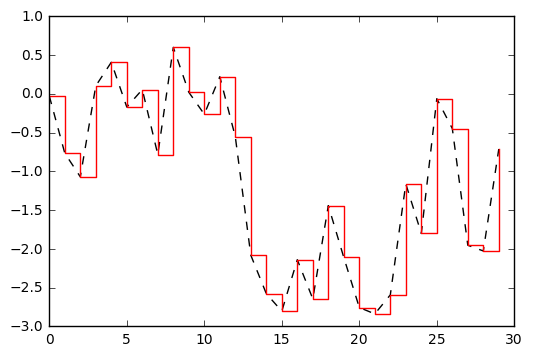

Jupyter QtConsole 4.2.1
Python 3.5.2 |Anaconda 4.2.0 (64-bit)| (default, Jul 5 2016, 11:41:13) [MSC v.1900 64 bit (AMD64)]
Type "copyright", "credits" or "license" for more information.
IPython 5.1.0 -- An enhanced Interactive Python.
? -> Introduction and overview of IPython's features.
%quickref -> Quick reference.
help -> Python's own help system.
object? -> Details about 'object', use 'object??' for extra details.
In [1]: %matplotlib inline
In [2]: import numpy as np
In [3]: import matplotlib.pyplot as plt
In [4]: data = numpy.random.randn(30).cumsum()
...: plt.plot(data, 'k--', label="Default")
...: plt.plot(data, 'r-', drawstyle='steps-post', label='steps=post')
...:
---------------------------------------------------------------------------
NameError Traceback (most recent call last)
<ipython-input-4-bfb786af0890> in <module>()
----> 1 data = numpy.random.randn(30).cumsum()
2 plt.plot(data, 'k--', label="Default")
3 plt.plot(data, 'r-', drawstyle='steps-post', label='steps=post')
4
NameError: name 'numpy' is not defined
In [5]: data = np.random.randn(30).cumsum()
...: plt.plot(data, 'k--', label="Default")
...: plt.plot(data, 'r-', drawstyle='steps-post', label='steps=post')
...:
Out[5]: [<matplotlib.lines.Line2D at 0x1d955e451d0>]

In [6]: